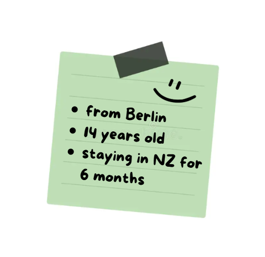
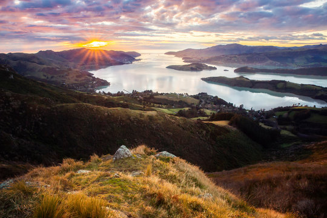

Hi, I'm Pia

Germany
Germany, located in the heart of Western Europe, is a country known for its rich history, cultural heritage, and economic leadership. Famous for its historic castles, scenic landscapes like the Black Forest and the Bavarian Alps, and modern cities like Berlin and Munich, it offers a diverse mix of small villages and urban life. As Europe's largest economy, Germany is globally recognized for its innovation, engineering, and high-quality manufacturing—particularly in the automotive sector. Beyond technology and industry, the nation has made profound contributions to philosophy, science, and the arts, giving rise to iconic figures such as Beethoven, Goethe, and Einstein. Today, Germany is a vibrant, democratic society with a high standard of living, known for its efficient infrastructure and rich traditions, including its world-renowned beer culture and holiday Christmas markets.
Berlin, where I am from, is Germany’s massive, edgy capital that feels completely different from a relaxed city like Christchurch. It’s famous for its dramatic history (like the Berlin Wall), raw street art, world-famous LGBTQ+ community and a it's late-night club culture. It’s an laid-back, creative, and quirky city where anything goes .

New Zealand
New Zealand is a breathtaking island nation in the southwestern Pacific Ocean. Famous for its dramatic natural landscapes, it features everything from active volcanoes and geothermal hot springs to soaring mountains. Known locally by its Māori name, Aotearoa ("land of the long white cloud"), it is celebrated for its unique wildlife (like the flightless kiwi bird), rich Māori cultural heritage, outdoor adventure sports, and a warm, laid-back "kiwi" lifestyle.
Christchurch (Ōtautahi) is the largest city on New Zealand’s South Island, known as the "Garden City" for its expansive parks and the Avon River winding through its center.The city is famous for its vibrant street art, restored historic trams, nearby surf beaches, and as a primary gateway to the Southern Alps and South Island adventures.
